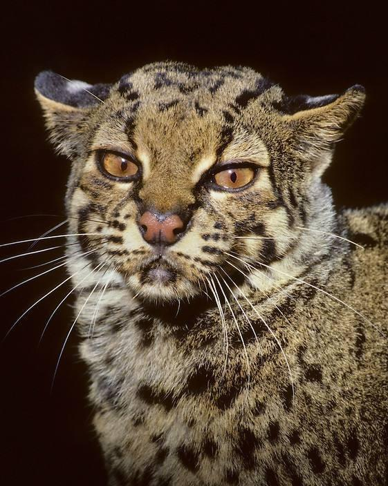
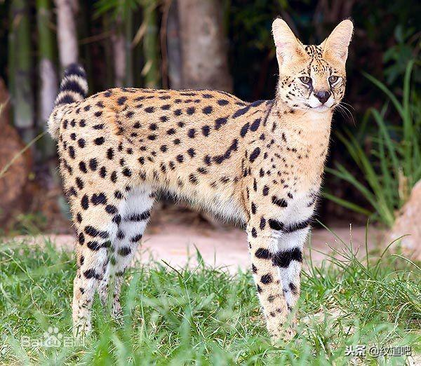

豹族
豹屬包括四種著名的大型貓科動物： 獅 - Panthera leo (1758)：分布於非洲和亞洲。 虎 - Panthera tigris (1758)：分布於亞洲。 美洲豹 - Panthera onca (1758)：分布於北美洲和南美洲。 豹 - Panthera pardus (1758)：分布於非洲和亞洲。 和其他貓科動物比較，只有這四種貓科動物有吼嘯的能力。
金貓族
紋貓（學名 Pardofelis marmorata），又名雲貓，是一種體型與家貓大小相仿的貓科動物，模式產地在蘇門答臘。紋貓的尾巴較長，並長有厚毛。紋貓一般棲息在樹上，有類似大理石斑紋的毛皮，故而得名。紋貓一般為灰黃色。過去常被歸入豹亞科，但最新的分類已將它歸入貓亞科。紋貓一般以鳥類、松鼠和嚙齒類動物為食。
獰貓族
藪貓的食物基本上是嚙齒類動物，但它們有時也捕食野兔、鳥類、爬行類、魚和蛙等。還有報導稱，藪貓可能捕食體型較大的動物，例如小羚羊，但是藪貓90%的獵物體重都不超過200克。藪貓的進食速度非常快。藪貓的行動以垂直奔跳爲主，它們主要通過大大的耳朵聆聽草原上嚙齒類動物的行動（尤其是挖穴活動）。藪貓的捕獵效率很高，成功率超過50%，而一般貓科動物只有10%左右。每胎產1-5子，以2-3子爲主，產子一般利用土豚的洞穴，或者灌木地下的空地。藪貓有時被豹捕食，不過它們最大的威脅來自人類。由於其皮毛美麗而昂貴，有不少人爲此偷獵藪貓。現在西非和東非的藪貓數量還比較多，但南非和撒哈拉沙漠以北的藪貓已經非常稀少，瀕臨滅絕。